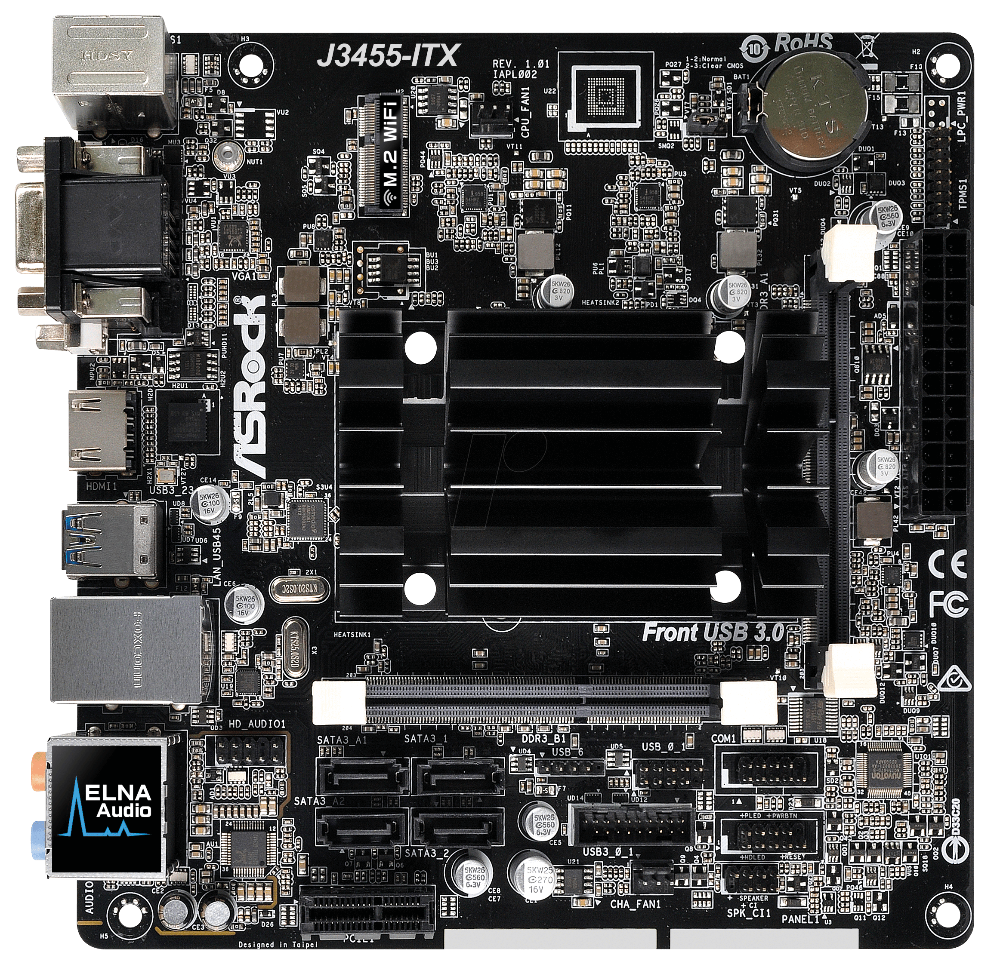

|
|
| FORM PEMBELIAN KOMPUTER DISINI!! |
Motherboard Mini ATX
|
Mini-ITX adalah motherboard berukuran sangat kecil, hanya sekitar 17 cm x 17 cm, yang dirancang untuk membangun sistem komputer hemat ruang atau mini-PC. Meskipun kecil, motherboard ini sering digunakan dalam pembuatan perangkat seperti home theater PC (HTPC), server kecil, atau komputer portabel yang tidak memerlukan banyak ekspansi. Mini-ITX hanya memiliki satu slot PCIe dan lebih sedikit slot RAM dibandingkan dengan motherboard ATX atau Micro-ATX, sehingga membatasi jumlah komponen yang dapat dipasang. Kelebihan utama Mini-ITX adalah ukurannya yang sangat kompak, memungkinkan pengguna untuk membangun PC dalam casing mini atau bahkan dalam perangkat yang sangat kecil. Namun, karena keterbatasan ruang, pengguna harus lebih selektif dalam memilih komponen, mengingat hanya ada sedikit ruang untuk upgrade atau penambahan kartu ekspansi. Mini-ITX sangat ideal bagi mereka yang membutuhkan komputer kecil dan portabel, atau untuk aplikasi yang tidak memerlukan banyak daya komputasi dan ruang ekspansi. |
 |